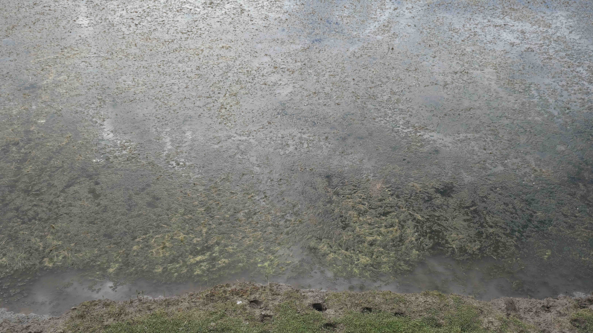
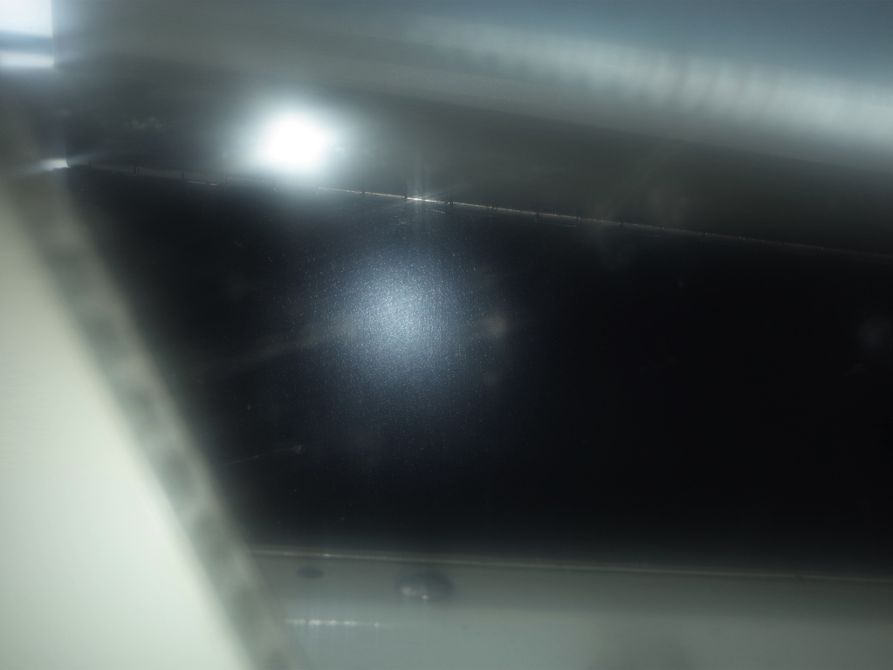

°Wang Xingdi graduated from the Electronic
Musical Instrument Engineering program at Xinghai
Conservatory of Music and is currently enrolled in the
Electronic Music Department at the Giuseppe Verdi
Conservatory of Music in Milan.
Her creative pursuits encompass a variety of genres,
including sound interactive installations, synthesizer
software design, acousmatic music, and three-
dimensional visual projects. Starting from sound
samples, she diverges into a series of intricate and
miniature worlds based on the interplay between
reality and illusion.
Her achievements include winning the Bronze Award
in the International Electronic Music Interactive
Media category at the Danny Awards, as well as an
Excellence Award in Applied Music, third prize in
the NCDA Future Designers Competition for Digital
Music in Guangdong province and received an
Outstanding Work Award at the National Conference
on Sound and Music Technology (CMST).



★ ° . * ✩ ° . °☆ . * ● ¸. ★ ° :. ★ * • ○ ° ★. * . .°
. ● . ★ ° . * ☆ . * ● ¸ . ★ ° :●. *• ○ ° ★ . * .
. ° . °☆ . * ● ¸ .★ ° . * ° . °☆ . * ● ¸. ★ ° :. * • ○ ° ★. * . ★ ° :.☆
xingdiwangxd@gmail.com
Instagram /
/ Rednote
XINGDI WANG